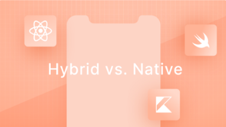

PRODUCT⚫ July 24, 2020
Interview - What it's like
to work remotely in big- sized product development?
People say that developing products isn't easy. Neither it is to build long-distance relationships. But, how about doing both, simultaneously?
Bruno Teixeira
Lead Product Owner

DEVELOPMENT. July 2, 2020
Hybrid vs. Native - Here is how you can choose one over the other...
There is no denying it, hybrid mobile development is booming and becoming the main option when considering developing a mobile application due to the lower costs and faster development time.
DEVELOPMENT. July 2, 2020
From monolithic to headless: how and why you should adapt your WordPress stack
Every dynamic website consists of two main parts: the backend and the frontend. The backend, which in marketing websites is commonly a Content Management System (CMS), allows the website owners...